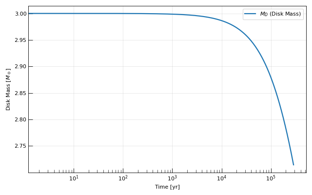
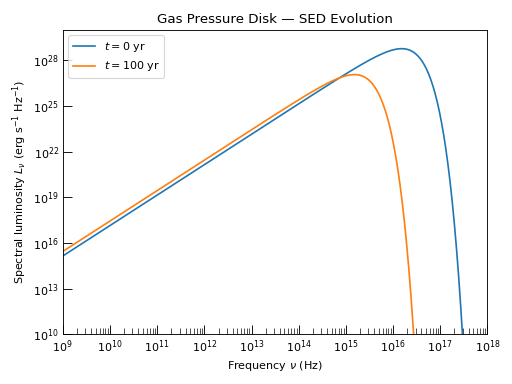

One-Zone Accretion Disk Models#
The one-zone disk module provides time-dependent accretion disk evolution in a compact, inference-friendly package. The disk is reduced to a two-component ODE system (mass \(M_D\) and angular momentum \(J_D\)), integrated by a compiled Cython explicit-Euler kernel that evaluates all thermodynamic and structural quantities at every step.
Note
This document covers everything a user needs to run simulations with existing models and everything a developer needs to add new thermodynamic closures. For the underlying physics see One-Zone Accretion Disk Models: Theory.
Quick Start#
To get started with the one-zone accretion disk module, it is only necessary to follow a couple of simple steps:
Choose a model class from the list below and instantiate it with the desired context parameters.
Call the
solve()method with the initial conditions, runtime parameters, and solver options.Access the results through the returned
OneZoneAccretionResultobject.
Here is the minimal workflow for a compact accretion disk around a stellar-mass black hole:
import matplotlib.pyplot as plt
from astropy import constants as const
from astropy import units as u
from trilobite.dynamics.accretion.one_zone import GasPressureDisk
from trilobite.utils.plot_utils import set_plot_style
# 1. Setup Environment
set_plot_style()
# 2. Configure Disk Parameters
M_BH = 1e6 * const.M_sun
M_D_0 = 3 * const.M_sun
R_D_0 = 3.0e15 * u.cm
disk = GasPressureDisk(mu=0.62)
ic = disk.generate_initial_conditions(M_BH=M_BH, M_D_0=M_D_0, R_D_0=R_D_0)
# 3. Solve the System
result = disk.solve(
initial_conditions=ic,
runtime_parameters={
"M_BH": M_BH,
"R_in": 3.0e6 * u.cm,
"alpha": 0.1
},
t_span=(0, 1e7 * u.yr),
max_steps=100_000,
)
# 4. Extract Data
data = result.data
t_yr = data["t"].to(u.yr).value
m_disk = data["M_D"].to(u.M_sun).value
# 5. Visualization
fig, ax = plt.subplots(figsize=(8, 5))
ax.semilogx(t_yr, m_disk, label=r"$M_D$ (Disk Mass)", lw=2)
ax.set_xlabel("Time [yr]")
ax.set_ylabel(r"Disk Mass [$M_\odot$]")
ax.legend()
ax.grid(True, alpha=0.3)
plt.tight_layout()
plt.show()
(Source code, png, hires.png, pdf)
{kind=link}
{kind=link}

Hint
All parameter values and time-span endpoints accept either plain floats
(in the base CGS unit for that parameter) or
Quantity objects. Unit conversion is applied
automatically by the solver.
There are many different disk models to choose from, each covering a different physical regime. The list of available models is as follows:
Class |
Pressure |
Opacity |
Temperature solve |
|---|---|---|---|
Gas only |
Electron scattering |
Analytic (\(T_c \propto Q_0^{1/3}\)) |
|
Gas + Radiation |
Electron scattering |
Implicit (Brent’s method) |
|
|
Gas only + fallback supply |
Electron scattering |
Analytic (\(T_c \propto Q_0^{1/3}\)) |
|
Gas + Radiation + fallback supply |
Electron scattering |
Implicit (Brent’s method) |
Gas + Radiation + advection |
Electron scattering |
Implicit (Brent’s method) |
|
|
Gas + Radiation + advection + fallback |
Electron scattering |
Implicit (Brent’s method) |
All models are importable from the package top-level:
from trilobite.dynamics.accretion.one_zone import (
GasPressureDisk,
FullPressureDisk,
AdvectiveDisk,
)
Note
The legacy aliases gP_esDisk, igP_esDisk, igP_es_advDisk,
gP_es_fbDisk, igP_es_fbDisk, and igP_es_adv_fbDisk remain
importable for backward compatibility but refer to the same classes.
In the sections below, we’ll describe the various methods and available features for each of the models.
Creating a Disk Model#
Each disk class is instantiated with context parameters: physical constants that are fixed for the lifetime of a model instance and do not change between solves.
Hint
Think of the context parameters as the physics configuration. This is where you’ll find flags for enabling / disabling various different physical effects, setting up an equation of state, or defining the opacity law.
The various models have several different sets of available context parameters:
API Doc: GasPressureDisk
Parameter |
Description |
Default |
|---|---|---|
|
Mean molecular weight \(\mu\) (dimensionless). Appropriate values are \(\approx 0.6\) for a fully-ionised solar-composition plasma or \(\approx 0.5\) for a pure hydrogen plasma. |
|
disk = GasPressureDisk(mu=0.62)
API Doc: FullPressureDisk
Parameter |
Description |
Default |
|---|---|---|
|
Mean molecular weight \(\mu\) (dimensionless). |
|
disk = FullPressureDisk(mu=0.62)
API Doc: AdvectiveDisk
Parameter |
Description |
Default |
|---|---|---|
|
Mean molecular weight \(\mu\) (dimensionless). |
|
|
Entropy gradient parameter (dimensionless, \(>0\)). Controls
the advective fraction \(q_{\rm adv}/q_{\rm visc} \propto
\xi\,\alpha\,(H/R)^2\). Setting \(\xi \to 0\) recovers
|
|
disk = AdvectiveDisk(mu=0.62, xi=0.5)
API Doc: AdvectiveDisk
Parameter |
Description |
Default |
|---|---|---|
|
Mean molecular weight \(\mu\) (dimensionless). |
|
|
Entropy gradient parameter (dimensionless, \(>0\)). See Watarai[1]. |
|
Requires M_fb_0 and t_fb as runtime parameters in addition to the
standard M_BH, R_in, alpha.
disk = AdvectiveDisk(mu=0.62, xi=0.5, fallback=True)
Running a Simulation#
Once you’ve initialised a disk object, the next step is to set up the initial conditions and runtime parameters, then call the solver.
Initial Conditions#
Every disk model requires, at minimum, the initial disk mass \(M_{D,0}\) and angular momentum \(J_{D,0}\). The simplest approach is to supply them directly:
initial_conditions = {
"M_D_0": 0.1 * const.M_sun,
"J_D_0": 1.5e49 * u.g * u.cm**2 / u.s,
}
In many cases the angular momentum is not the natural parameter to specify —
it is more intuitive to think in terms of an initial disk outer radius
\(R_{D,0}\). The helper method
generate_initial_conditions()
accepts any two of the three state variables and solves for the third.
Example — specifying initial radius instead of angular momentum
ic = disk.generate_initial_conditions(
M_BH=3.0 * const.M_sun,
M_D_0=0.1 * const.M_sun,
R_D_0=3.0e13 * u.cm, # supply R_D_0 instead of J_D_0
)
# ic = {"M_D_0": ..., "J_D_0": ...}
result = disk.solve(
initial_conditions=ic,
runtime_parameters={"M_BH": 3.0 * const.M_sun, "R_in": 3.0e6 * u.cm, "alpha": 0.1},
t_span=(1.0e6 * u.s, 5.0e9 * u.s),
)
Running the Solver#
solve()
is the primary entry point. It takes the initial conditions, per-solve physics
inputs (runtime parameters), and a time span, then hands control to the
compiled Cython integrator:
result = disk.solve(
initial_conditions=ic,
runtime_parameters=run_params,
t_span=(1.0e6 * u.s, 5.0e9 * u.s),
max_steps=100_000,
fail_fast=True,
)
Runtime Parameters#
Runtime parameters vary between models, but most models require at least:
Parameter |
Description |
Base unit |
|---|---|---|
|
Black hole mass. |
g |
|
Inner disk truncation radius (e.g. ISCO). |
cm |
|
Shakura–Sunyaev viscosity parameter (dimensionless). |
— |
Solver Options#
Like most other numerical integrators, the one-zone solver accepts some options that control the integration behaviour and error handling. The most commonly used options are:
Option |
Type |
Default |
Description |
|---|---|---|---|
|
int |
|
Hard limit on integration steps. The solver terminates early if
|
|
bool |
|
If |
Warning
If the Cython integrator encounters an unrecoverable failure it raises a
RuntimeError. The error code (embedded in the message) identifies
the cause:
Code |
Name |
Meaning |
|---|---|---|
|
|
The root-finding residual returned NaN or Inf (unphysical disk state). |
|
|
Bracket expansion could not find a sign change — no thermal equilibrium exists for this set of disk parameters. |
|
|
Both bracket endpoints had the same sign after expansion. |
|
|
Brent’s method did not converge within the iteration limit. |
|
|
The ODE derivative function returned a non-zero status. |
|
|
The result-writer function returned a non-zero status. |
EXPAND_FAIL typically means the energy balance has no physical equilibrium
for the chosen parameters. Reducing \(\alpha\) or the initial disk mass
usually resolves the issue.
Accessing Results#
Once you have performed a simulation, the result returned by
solve()
is an
OneZoneAccretionResult
object. This section covers everything you can do with it: reading raw field
data, time interpolation, and computing derived physical observables.
The data Dictionary#
The primary interface is the
data
property, which returns a dictionary of unit-bearing
Quantity arrays — one value per integration step:
data = result.data
print(data["T_c"]) # midplane temperature, shape (N,) [K]
print(data["R_D"].to(u.au)) # outer disk radius in AU
print(data["mdot"]) # accretion rate, shape (N,) [g/s]
Subscript notation on the result object itself is also supported as a shortcut:
T_c = result["T_c"] # equivalent to result.data["T_c"]
R_D = result["R_D"]
The following fields are available for all models.
AdvectiveDisk additionally
exposes Q_adv (advective cooling rate, erg cm⁻² s⁻¹):
Hint
Each model class also lists its available fields in the API documentation.
Field name |
Description |
Units |
|---|---|---|
|
Integration time |
s |
|
Disk mass |
g |
|
Disk angular momentum |
g cm² s⁻¹ |
|
Disk outer radius |
cm |
|
Area-averaged surface density |
g cm⁻² |
|
Orbital angular velocity at \(R_D\) |
rad s⁻¹ |
|
Effective (surface) temperature |
K |
|
Midplane temperature |
K |
|
Vertical optical depth |
dimensionless |
|
Isothermal sound speed |
cm s⁻¹ |
|
Kinematic viscosity |
cm² s⁻¹ |
|
Viscous timescale at \(R_D\) |
s |
|
Viscous dissipation rate per unit area |
erg cm⁻² s⁻¹ |
|
Mass accretion rate (positive = inflow) |
g s⁻¹ |
|
Disk scale height |
cm |
|
Disk aspect ratio \(H/R_D\) |
dimensionless |
|
Midplane mass density |
g cm⁻³ |
Convenience Properties and Snapshots#
Frequently needed state variables are also exposed as direct properties of the result object:
result.t # integration times [s], shape (N,)
result.t_quantity # integration times as a Quantity [s]
result.M_D # disk mass [g]
result.M_D_solar # disk mass [M_sun]
result.J_D # angular momentum [g cm^2 / s]
result.n_steps # number of stored timesteps N
For a quick sanity check, the
initial_state
and
final_state
properties return dictionaries of every field evaluated at the first and last
timestep:
t0 = result.initial_state
tf = result.final_state
print(f"Initial T_c = {t0['T_c']:.3e}")
print(f"Final M_D = {tf['M_D'].to(u.Msun):.4f}")
Time Interpolation#
The explicit-Euler integrator outputs values at adaptively spaced timesteps governed by the local viscous timescale — the step size shrinks when the disk is evolving rapidly and grows when it is in a quasi-steady state. To evaluate any field at a uniform or user-specified time grid, use the interpolation utilities.
get_field_interpolator()
builds a InterpolatedUnivariateSpline over the
integration time axis:
interp_Tc = result.get_field_interpolator("T_c") # cubic spline (k=3)
interp_mdot = result.get_field_interpolator("mdot", k=1) # linear spline
interpolate_field()
evaluates the spline at new times and re-attaches the correct astropy units:
t_eval = np.geomspace(1e6, 5e9, 500) * u.s
T_c_interp = result.interpolate_field("T_c", t_eval)
mdot_interp = result.interpolate_field("mdot", t_eval)
When evaluating many fields at the same set of times, pass a pre-built interpolator to avoid redundant spline construction:
interp = result.get_field_interpolator("T_c")
for t in t_grid:
T = result.interpolate_field("T_c", t, interpolator=interp)
Derived Physical Observables#
In addition to the standard output fields, several physical observables can be derived directly from the result object. All four methods below treat the one-zone disk as a uniform-temperature blackbody annulus at the stored effective temperature \(T_{\rm eff}(t)\). While this is an approximation (the SS73 radial temperature profile is not flat), it is self-consistent with the one-zone model’s single-zone energy balance.
Note
For accurate multi-colour SEDs and radial temperature profiles, use
AlphaDisk, which solves the full
Shakura-Sunyaev structure. See Steady-State Thin Disk for details.
Note
For a discussion of the theory of accretion disks, see One-Zone Accretion Disk Models: Theory.
Warning
All compute_* methods raise ValueError by default if the
requested time falls outside the simulation time range. To change this
behaviour, pass ext as a keyword argument:
|
Out-of-bounds behaviour |
|---|---|
|
Raise |
|
Extrapolate the spline beyond the boundary |
|
Return zero |
|
Clamp to the boundary value |
This keyword is forwarded to InterpolatedUnivariateSpline
only when no pre-built interpolator is supplied. If a pre-built interpolator is passed,
its own ext setting applies.
Accretion Luminosity#
compute_accretion_luminosity()
evaluates the gravitational power released by viscous dissipation
(Frank et al.[2] Eq. 5.22):
L_acc = result.compute_accretion_luminosity(1.0e8 * u.s)
print(L_acc.to(u.Lsun))
# Reuse an existing interpolator for speed in loops:
interp = result.get_field_interpolator("mdot")
L_arr = result.compute_accretion_luminosity(t_grid, interpolator=interp)
Hint
In radiatively efficient models (GasPressureDisk, FullPressureDisk)
virtually all of this power escapes as radiation, so
\(L_{\rm acc} \approx L_{\rm rad}\). In advection-dominated models
(AdvectiveDisk) a fraction is advected inward, giving
\(L_{\rm rad} < L_{\rm acc}\).
Radiative (Bolometric) Luminosity#
compute_radiative_luminosity()
gives the Stefan-Boltzmann power actually emitted from the disk surface:
Because \(T_{\rm eff}\) is set by the one-zone energy balance, this is the power that truly escapes as thermal radiation.
L_rad = result.compute_radiative_luminosity(1.0e8 * u.s)
print(L_rad.to(u.Lsun))
# For AdvectiveDisk, compare to accretion luminosity:
print(L_rad / L_acc) # < 1 when advection is significant
Spectral Luminosity#
compute_spectral_luminosity()
evaluates the monochromatic blackbody luminosity from both disk faces:
Integrating over all frequencies recovers \(L_{\rm rad}\).
nu = np.geomspace(1e12, 1e17, 300) * u.Hz
L_nu = result.compute_spectral_luminosity(nu, time=1.0e8 * u.s)
print(L_nu.to(u.erg / u.s / u.Hz))
Example
import numpy as np
import matplotlib.pyplot as plt
from astropy import constants as const
from astropy import units as u
from trilobite.dynamics.accretion.one_zone import GasPressureDisk
from trilobite.utils.plot_utils import set_plot_style
# ---------------------------------------------------------------------------
# Plot styling
# ---------------------------------------------------------------------------
set_plot_style()
# ---------------------------------------------------------------------------
# Disk and black hole parameters
# ---------------------------------------------------------------------------
M_BH = 1e6 * const.M_sun # Black hole mass
M_D_0 = 30 * const.M_sun # Initial disk mass
R_D_0 = 3.0e13 * u.cm # Initial disk radius
ALPHA = 0.1 # Shakura-Sunyaev viscosity parameter
R_IN = 3.0e6 * u.cm # Inner truncation radius (≈ 3 R_S for 10 M_sun BH)
T_END = 1e3 * u.yr # Total integration time
T_SNAP = 1e2 * u.yr # Snapshot time for the second SED
# ---------------------------------------------------------------------------
# Build and evolve the disk
# ---------------------------------------------------------------------------
disk = GasPressureDisk(mu=0.62) # mu: mean molecular weight (fully ionised H/He mix)
initial_conditions = disk.generate_initial_conditions(
M_BH=M_BH,
M_D_0=M_D_0,
R_D_0=R_D_0,
)
result = disk.solve(
initial_conditions=initial_conditions,
runtime_parameters={
"M_BH": M_BH,
"R_in": R_IN,
"alpha": ALPHA,
},
t_span=(0, T_END),
max_steps=1_000_000,
)
# ---------------------------------------------------------------------------
# Compute spectral energy distributions
# ---------------------------------------------------------------------------
nu = np.geomspace(1e9, 1e18, 400) * u.Hz # Frequency grid: radio → hard X-ray
L_nu_initial = result.compute_spectral_luminosity(nu, 0 * u.yr).to_value("erg / (s Hz)")
L_nu_snap = result.compute_spectral_luminosity(nu, T_SNAP).to_value("erg / (s Hz)")
# ---------------------------------------------------------------------------
# Plot
# ---------------------------------------------------------------------------
fig, ax = plt.subplots()
ax.loglog(nu, L_nu_initial, label=r"$t = 0$ yr")
ax.loglog(nu, L_nu_snap, label=rf"$t = {T_SNAP.value:.0f}$ yr")
ax.set_xlim(nu[[0, -1]].value)
ax.set_ylim(1e10, 1e30)
ax.set_xlabel(r"Frequency $\nu$ (Hz)")
ax.set_ylabel(r"Spectral luminosity $L_\nu$ (erg s$^{-1}$ Hz$^{-1}$)")
ax.set_title("Gas Pressure Disk — SED Evolution")
ax.legend()
fig.tight_layout()
plt.show()
(Source code, png, hires.png, pdf)
{kind=link}
{kind=link}

Flux Density#
compute_flux_density()
gives the monochromatic flux received by a distant observer
(Frank et al.[2] Eq. 5.45):
nu = np.geomspace(1e12, 1e17, 300) * u.Hz
F_nu = result.compute_flux_density(
nu,
time=1.0e8 * u.s,
D_L=100 * u.Mpc,
cos_theta=0.866, # ~30-degree inclination
)
print(F_nu.to(u.mJy))
Bolometric Flux#
compute_bolometric_flux()
gives the frequency-integrated observed flux:
F_bol = result.compute_bolometric_flux(
1.0e8 * u.s,
D_L=100 * u.Mpc,
)
print(F_bol.to(u.erg / u.s / u.cm**2))
Diagnostic Utilities#
Before committing to a long run or a large parameter sweep, it is worth confirming that the initial conditions correspond to a physically self-consistent disk state.
Single-Step Solve#
solve_initial_state()
runs exactly one integration step and returns the full result object. This is
a fast way to inspect the initial thermodynamic state before launching the full
integration:
result0 = disk.solve_initial_state(
initial_conditions=ic,
runtime_parameters=run_params,
)
print(result0["T_c"]) # midplane temperature at t=0
print(result0["H_over_R"]) # check the thin-disk assumption
Physical Self-Consistency Checks#
test_initial_state()
runs a battery of physical consistency checks on the initial disk state and
returns a report dictionary. Each entry records whether the check passed and
a diagnostic note:
report = disk.test_initial_state(
initial_conditions=ic,
runtime_parameters=run_params,
)
for name, result in report.items():
status = "PASS" if result["passed"] else "FAIL"
print(f" [{status}] {name}: {result['note']}")
The checks performed are:
Check name |
Condition |
What a failure means |
|---|---|---|
|
All output fields are finite |
Unphysical disk state — try less extreme parameters |
|
\(T_c > 0\) |
Should always pass if |
|
\(\tau > 1\) (optically thick) |
Diffusion approximation breaks down at low \(\tau\) |
|
\(H/R \ll 1\) (geometrically thin) |
Values \(\gtrsim 0.3\) indicate a geometrically thick, sub-Keplerian disk |
|
\(R_D > R_{\rm in}\) |
The disk must extend beyond the inner truncation radius |
Parameter Grid Sweeps#
solve_parameter_grid()
runs the disk model over the full Cartesian product of a set of parameter values,
returning a dictionary of results keyed by parameter tuples:
results = disk.solve_parameter_grid(
initial_conditions_grid={
"M_D_0": [0.05 * const.M_sun, 0.1 * const.M_sun, 0.2 * const.M_sun],
},
runtime_parameters_grid={
"M_BH": [3.0 * const.M_sun, 10.0 * const.M_sun],
"R_in": [3.0e6 * u.cm],
"alpha": [0.05, 0.1, 0.3],
},
t_span=(1.0e6 * u.s, 5.0e9 * u.s),
max_steps=50_000,
fail_fast=False, # continue on failure so one bad run doesn't abort the grid
)
# Access a specific run: keys are sorted (name, value) tuples
key = (("M_BH", 3.0 * const.M_sun), ("M_D_0", 0.1 * const.M_sun),
("R_in", 3.0e6 * u.cm), ("alpha", 0.1))
r = results[key]
A tqdm progress bar is shown automatically when progress bars are enabled
in the project configuration.
Note
Each combination is run sequentially in the current process. For large grids,
wrap individual solve() calls in a
concurrent.futures.ProcessPoolExecutor for parallelism. see the
trilobite.parallel module for convenience wrappers.
Persistence#
Results can be saved and reloaded in several formats. HDF5 is recommended for large outputs: it preserves units metadata and loads much faster than plain text.
# Save
result.to_hdf5("disk_run.h5", overwrite=True)
# Load
from trilobite.dynamics.accretion.one_zone import OneZoneAccretionResult
loaded = OneZoneAccretionResult.from_hdf5("disk_run.h5")
tbl = result.to_table()
tbl.write("disk_run.ecsv", overwrite=True)
df = result.to_dataframe() # requires pandas
df.to_csv("disk_run.csv", index=False)
Note
to_dataframe() requires pandas, which is not a mandatory
dependency of Trilobite. If not installed, a descriptive
ImportError is raised.
Disk model instances (not results) can also be serialised to a plain dict and reconstructed, which is useful for logging run configurations or building reproducible pipelines:
spec = disk.to_spec_dict()
import json
print(json.dumps(spec, indent=2))
# {"target": "...core:GasPressureDisk", "mu": 0.62}
disk2 = GasPressureDisk.from_spec_dict(spec)
API Reference#
Disk Models#
|
One-zone disk model with gas pressure and configurable opacity. |
|
One-zone disk model with combined gas and radiation pressure. |
|
One-zone disk with gas + radiation pressure and advective cooling. |
|
Abstract base class for one-zone accretion disk models. |
Result Container#
|
Result container for a one-zone accretion disk ODE solve. |
Developer Guide#
For step-by-step instructions on adding a new thermodynamic closure — including the Cython extension type, the Python model class declaration, parameter packing, and the test conventions — see the dedicated Developer Guide: Adding One-Zone Disk Closures.